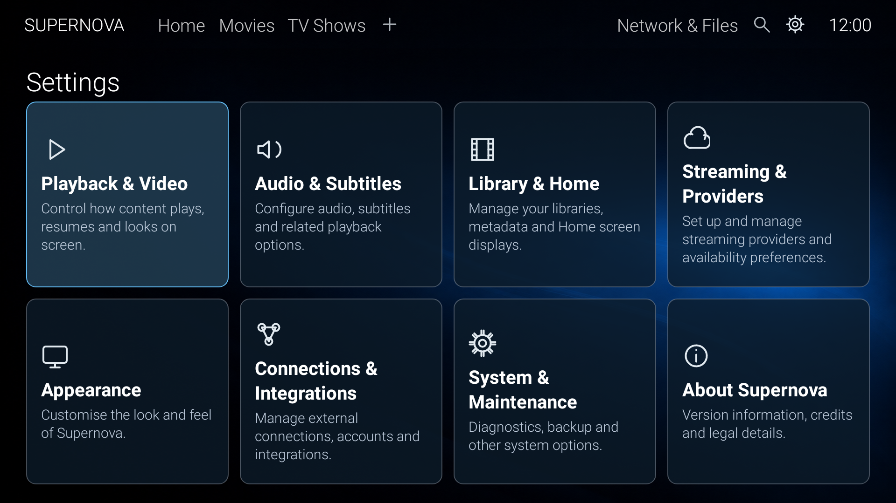
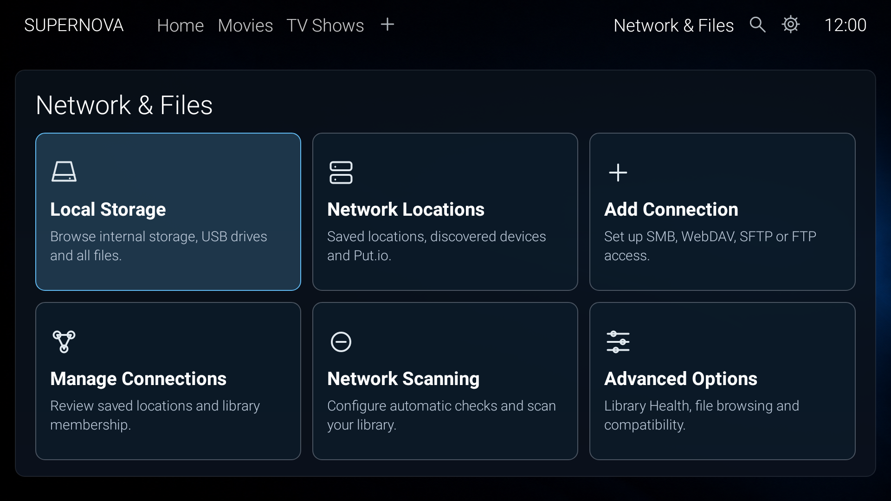
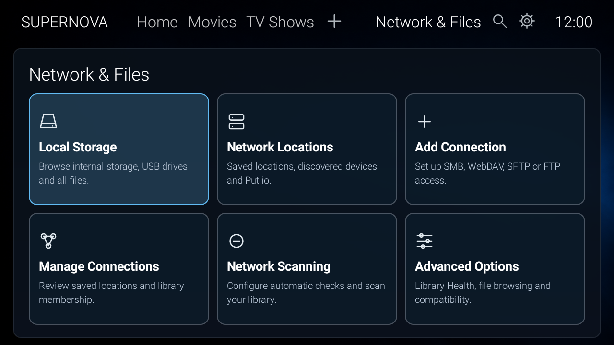

Supernova 0.147 software QA
Exact source f4abf7cb880243ba00481f82beee19d20bc72e33. Native Android/Robolectric renders from successful run 40945894979. These are synthetic fixtures, not physical Shield captures. All 88 focused tests pass. Image provenance · Validation and limitations
Shared visual system
Compare the existing Settings 4×2 grid with the approved Network & Files 3×2 grid. Shared navigation, type, focus and card surfaces are review targets; different card geometry is intentional.

Settings, 1080p
Network & Files, 1080pOpacity comparison
50%
The overlay compares the same 1080p viewport. Use the shared top navigation as an alignment reference; it does not imply identical page content or pixel-perfect acceptance.
Responsive landing

Cards, forms and Settings category
Playback certification
Transparent passive overlay rendered with an injected TV-MA label, separate from regional metadata-selection tests. The black viewer background is not an overlay panel. Video/subtitle composition, brightness and physical timing require Shield QA.